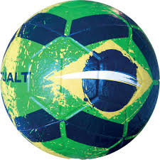

Produtos

Bola Oficial
Alta performance e durabilidade. Ideal para jogos profissionais e amadores.

Camisa Personalizada
Estilo e paixão em uma única peça. Personalize com seu nome e número!
Alta performance e durabilidade. Ideal para jogos profissionais e amadores.
Estilo e paixão em uma única peça. Personalize com seu nome e número!